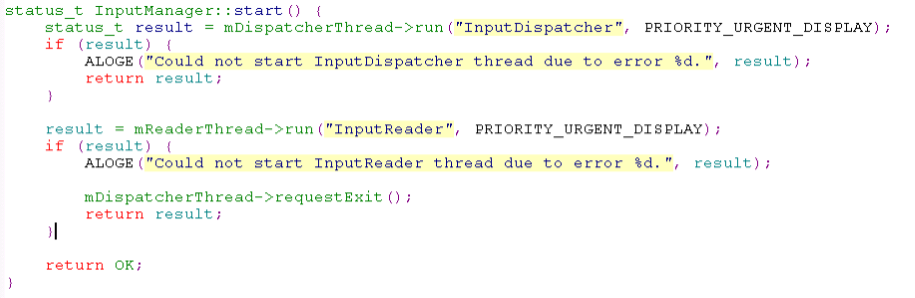
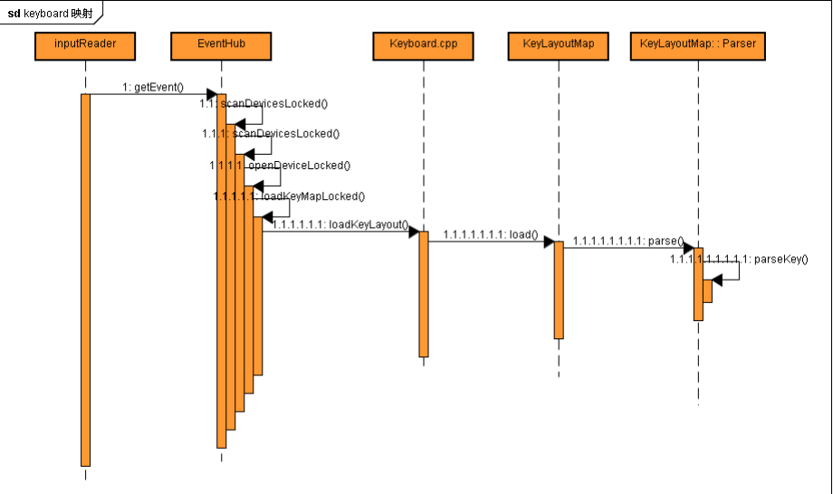
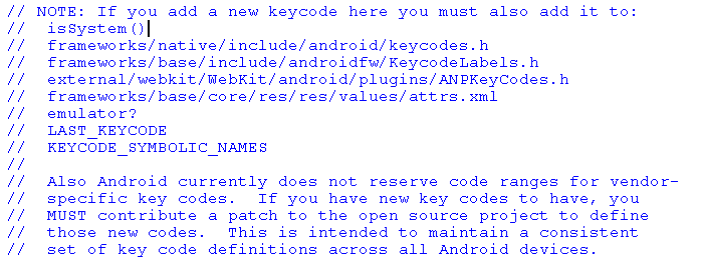

Android Input System
1 Input system 概述
目前android对于linux系统中键盘、鼠标、触摸屏、游戏杆(joystick)等输入 设备的支持都是通过标准的input输入系统。经过转换可以把用户的各种设备 的输入通知当前的窗口，从而完成输入。
1.1 主要类
1.1.1 SystemService
Zygote进程负责启动系统服务进程SystemServer，而系统服务进程 SystemServer负责启动系统中的各种关键服务。这里创建 inputManagerService，及WindowManagerService对象，启动input相关的 service。
1.1.2 InputManagerService
创建HubEvent，InputManager对象。并进一步通过InputManager创建 InputReader、InputDispatcher实例及thread。
NOTES: EventHub：真正执行键盘/IR/motion等按键操作监控的类。然后把 它作为参数来创建InputManager对象
1.1.3 InputManager
主要用来总负责监控Input Event消息。这些Input Event一般都是分 发给当前激活的Activity窗口来处理的，因此，当前激活的Activity 窗口在创建的时候，会到WindowManagerService中去注册一个接收 Input Event的通道，表明它要处理Input Event ，而当InputManager 监控到有Input Event时，就会分给它处理。当前激活的Activity窗口 不再处于激活状态时，它也会到WindowManagerService中去注销之 前的接收通道，这样，InputManager就不会再把键盘消息分发给它来 处理。
NOTES: InputManager创建InputReader，InputDispatchers对象，并启动InputDispatcherThread、InputReaderThread。
1.1.4 InputReader
主要通过EventHub，获得包含device/按键等的RAW Event。并做
pre-process。并把event放到 mlnBoundQueue 中。
1.1.5 WindowManagerService
创建InputManager和Activity之间通信的InputChannel, 这样InputManager 可以通过InputChannel发送Event到UI线程。
1.1.6 InputChannel
在activity resume的时候， ActivityThread 会通过
android.view.WindowManagerImpl 类为该Activity创建一个 ViewRoot
对象， 并且会通过调用ViewRoot类的setView成员函数把与该Activity关联的View
设置到这个ViewRoot中去，而Activity正是通过ViewRoot类的setView成员
函数来注册Event消息接收通道的。
1.2 代码路径
frameworks/native/libs/input主要包含：InputChannel,inputPublisher,InputConsumerframeworks/base/service/input主要包含：InputReader，InputReaderThread，InputDispatcher， InputDispatcherThread。frameworks/base/server/jni主要包含：NativeInputManagerAlps/frameworks/base/server/wm主要包含：WindowManagerService.frameworks/base/core/java/android/view主要包含：ViewRootImpl.
2 InputManager工作flow
2.1 InputManager的启动过程
- InputManager的创建
inputManager = new InputManagerService(context, wmHandler);
- SystemService创建inputManagerService(JAVA)，也就是Java层的 inputManager。
- inputManagerService(Java) 创建EventHub及inputManager(C++)
- inputManager(C++) 创建inputReader/inputDispatcher及inputDispatcherThread/inputReaderThread.
其中创建EventHub，主要是为了从底层拿input Event。inputReader和 inputDispatcher主要负责input Event接收和分发。 inputDispatcherThread/inputReaderThread继承自Thread，分别用来运 行前面所创建的一个inputDispatcher和inputReader对象。
- InputManager的启动
在systemService中创建完成inputManager相关的对象和thread后，就要
正式启动inputManager开始工作。
inputManager.start();
e从java层一直到C++层，最终会跑到如下code来让 InputDispatcherThread和inputReaderThread run起来。开始工作。

- inputDispatcher启动 inputDispatcherThread继承自Thread，入口函数为ThreadLoop。
2.2 InputManager分发InputEvent流程
3 InputChannel注册流程
4 IR映射过程
Key从driver scanCode到keycode的映射需要经过两次映射： 键扫描码Scan Code -> 按键标签KeyCodeLabel->按键码Keycode
- 第一次转换的map表path
system image path：system/usr/kaylayout/*.kl
code path：frameworks/base/data/keyboard/*.kl
系统会根据devicename加载devicename.kl文件，如果没有定义 devicename.kl文件，目前我们android BOX上系统会自动加载Generic.kl 文件。
- 第二次转换的map表是
/frameworks/base/include/ui/KeycodeLabels.h中定义的KEYCODES[]。

在Parser中，首先读取frameworks/base/data/keyboards/*kl.然后一行一行的解析。
- 如果判断第一个字符串(每个字符串以空格区分)为key,则读取第二个字 符串code。并判断当前的map中是否有这个code。如果有，则不能添加 到map中。
- 否则读取第三个字符串，并从 frameworks/native/include/input/keycodeLabel.h中找对应的值，找 到就返回键值keycode。
- 如果有第四个字符串，则是flags。如果没有则为0。
- 最后，以map<code, key>的方式保存下来。如home键： (172,<3 0>)。
5 如何添加一个新Key
假如添加一个linux键值为217，把它映射为android的键值Browser。
- android之前没有这个键值，需要定义
///frameworks/base/core/java/android/view/KeyEvent.java //定义这个新的键值 public static final int KEYCODE_BROWSER = 211;
可以看到里面有一些注释，标明了如何在android添加这个新的key，还需 要修改的地方。

- 修改如下代码
///frameworks/base/core/java/android/view/KeyEvent.java public final boolean isSystem() { return native_isSystemKey(mKeyCode); } ///frameworks/base/jni/android_view_KeyEvent.java static jboolean native_isSystemKey(JNIEnv* env, jobject clazz, jint keyCode) { return KeyEvent::isSystemKey(keyCode); } ///frameworks/base/libs/ui/Input.cpp bool KeyEvent::isSystemKey(int32_t keyCode) { switch (keyCode) { …… case AKEYCODE_BROWSER: return true; } } native/include/android/keycodes.henum { …… AKEYCODE_CALCULATOR = 210, AKEYCODE_BROWSER = 211, }frameworks/base/include/ui/KeycodeLabels.hstatic const KeycodeLabel KEYCODES[] = { …… { "CALCULATOR", 210 }, {"BROWSER", 211}, { NULL, 0} }这个browser就是
frameworks/base/data/keyboards/*kl中的，如： key 217 BROWSER , 这里的BROWSER就是我们定义的android键值的字符形 式，217则是linux键值